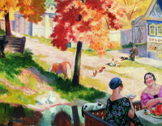

<!DOCTYPE html><html lang="ru"></html><head><meta charset="UTF-8"/><meta name="viewport" content="width=device-width, initial-scale=1.0"/><title>Document</title><link rel="stylesheet" href="./css/style.min.css"/></head><body><header class="header"><div class="header__description"><nav class="header__menu menu"><span class="menu__search-icon"></span><span class="menu__menu-icon"></span><ul class="menu__list"><li class="menu__item">биография</li><li class="menu__item">творчество</li><li class="menu__item">картины</li><li class="menu__item">музеи</li></ul></nav><div class="header__painter-text"><div class="header__painter-years"><span class="header__painter-years-text">1878-1927</span></div><div class="header__painter-data"><h1 class="header__painter-name">борис кустодиев</h1><p class="header__painter-about">Художник, запечатлевший на своих ярких и жизнерадостных полотнах сцены русских будней и праздников. Обладал редким безграничным талантом, которому, в первую очередь, было присуще особое чувство и восприятие родной природы.</p></div></div></div><div class="header__image-block"></div></header><section class="biography"><div class="biography__wrapper"><h2 class="biography__title section-title">биография</h2><ul class="biography__list"><li class="biography__item"><p class="biography__year--empty"></p><p class="biography__text">Борис Кустодиев родился 7 марта 1878 года в Астрахани. Отца, преподавателя духовной семинарии, не стало, когда мальчику было чуть больше года. Мать осталась вдовой в 25 лет и содержала четверых детей.</p></li><li class="biography__item"><p class="biography__year">1887</p><p class="biography__text">Борис сначала учился в церковно- -приходской школе, потом в гимназии. Когда ему было девять лет, в город привезли выставку художников-передвижников. Мальчика настолько впечатлила живопись, что он твердо решил научиться рисовать так же искусно. Мать нашла деньги, чтобы Борис смог брать уроки у известного в Астрахани художника Павла Власова.</p></li><li class="biography__item"><p class="biography__year">1896</p><p class="biography__text">Окончив семинарию, в 1896 году Кустодиев отправился учиться в Москву, но в художественную школу его не приняли: Борису уже исполнилось 18 и он был слишком взрослым. Тогда Кустодиев поехал в Петербург, где подал документы в Высшее художественное училище при Академии художеств.</p></li></ul></div><div class="biography__footer section-footer"><a class="section-footer__link" href="">читать больше</a><ul class="section-footer__list"><li class="section-footer__item"><a class="section-footer__link-vk" href="http://vk.com/" target="_blank"></a><span class="section-footer__number">105</span></li><li class="section-footer__item"><a class="section-footer__link-tw" href="https://twitter.com/" target="_blank"></a><span class="section-footer__number">96</span></li><li class="section-footer__item"><a class="section-footer__link-fb" href="https://www.facebook.com/" target="_blank"></a></li></ul></div></section><section class="slider"><div class="slider__wrapper"><div class="slider__image-title"></div><ul class="slider__list"><li class="slider__item--end-cap"></li><li class="slider__item slider__item--active" data-number="1" data-description="Осень в провинции. Чаепитие#1"></li><li class="slider__item" data-number="2" data-description="Осень в провинции. Чаепитие#2"></li><li class="slider__item" data-number="3" data-description="Осень в провинции. Чаепитие#3"></li><li class="slider__item" data-number="4" data-description="Осень в провинции. Чаепитие#4"></li><li class="slider__item" data-number="5" data-description="Осень в провинции. Чаепитие#5"></li><li class="slider__item" data-number="6" data-description="Осень в провинции. Чаепитие#6"></li><li class="slider__item" data-number="7" data-description="Осень в провинции. Чаепитие#7"></li><li class="slider__item slider__item--last" data-number="8" data-description="Осень в провинции. Чаепитие#8"></li><li class="slider__item--end-cap"></li></ul><div class="slider__controls"><span class="slider__current-number"></span><span class="slider__overall-number"></span></div><a class="slider__link" href="">все картины</a></div></section><script src="./js/script.min.js"></script></body>